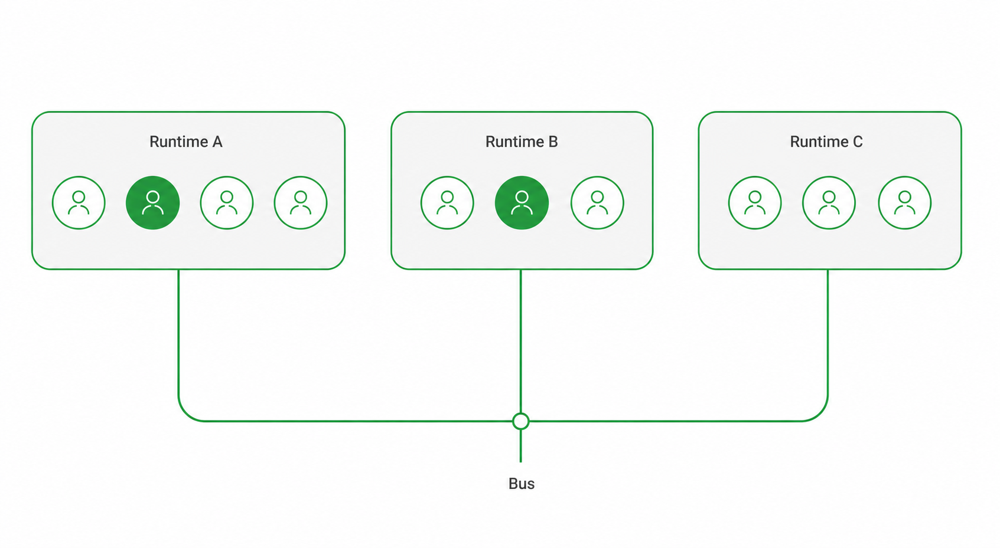

11 members · 4 runtimes · 8 skills · 15-step onboarding
b3rys는 단일 실행환경이 아니라 Claude Channel · OpenClaw · Hermes · Codex CLI를 하나의 메시지 버스로 묶은 팀 운영 레이어다. 멤버·런타임·응답 규칙·스킬 생태계·온보딩·Learning Loop를 한 페이지에 정리한다.
코어 5 · 전문 3 · 추가 3 — 총 11명. 각 멤버는 역할과 런타임(실행 환경)을 가진다. GD는 팀장·결정권자.

런타임 = 멤버가 실제로 돌아가는 실행 환경. 4종이 서로 다른 status_provider(상태 제공자)와 라우팅을 쓰지만, 모두 같은 메시지 버스를 공유한다.
공통: 모든 런타임이 Telegram 봇 네트워크 · Slack · 팀 메시지 버스(team bus)를 공유한다.
누가 언제 응답하는가. 기본은 mention-only, Codex만 default-intake. 순수 결정·승인·판단은 ask_gd(GD에게 위임).
스킬 = 런타임 중립 셸/노드 스크립트. 어느 런타임에서든 직접 실행. b3os-bwf(기본 과제 워크플로우)가 중심이고 나머지가 단계별 품질·인프라를 보조한다.
5 그룹 × 3 단계. 역할 정의부터 검증까지. 자격증명은 .env/credential store에만, TEAM-OS는 참조(복붙 금지).
생성됨 ≠ 동작함. 라우팅·반응·가시성을 실제 표시 기준으로 통과해야 활성화.
온보딩 리허설 → 정식 온보딩 → 역할 계약 → 오프보딩. credential 삭제·token revoke는 항상 GD 확인 후.
주간 자가학습 사이클과 24/7 운영 인프라. 교훈은 SHARED에 append, 검증 후 TEAM-OS로 승격.
팀 운영에 자주 등장하는 핵심 용어.